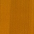

Важная информация!
Юбилей завода
ПЛАСТИКОВЫЕ ОКНА
Компания «Центрпласт» предлагает широчайший ассортимент пластиковых окон, отличающихся конструктивными особенностями, материалами, из которых они изготовлены и соответственно стоимостью. Пластиковые окна, произведенные нашей компанией, отвечают всем современным требованиям, отличаются высоким качеством, долговечностью и надежностью.
Основными составляющими любого окна являются: армированный ПВХ профиль, фурнитура и стеклопакет.
ПРИ ПРОИЗВОДСТВЕ ОКОН МЫ ИСПОЛЬЗУЕМ
ПРОФИЛЬНЫЕ СИСТЕМЫ БЕЛЬГИЙСКОЙ КОМПАНИИ DECEUNINCK
Международный концерн Deceuninck, основанный в 1937 году, входит в ТОП-3 мировых производителей ПВХ профилей. Являясь социально-ответственной компанией, Deceuninck следует самым высоким экологическим стандартам и нормам энергоэффективности, благодаря чему аналитический центр «Национального Рейтингового Агентства» присудил всем профильным системам Deceuninck самый высокий рейтинг ПВХ «А+».
Сравнительные характеристики окон из вышеуказанных профильных систем можно посмотреть здесь
ФУРНИТУРУ НЕМЕЦКОЙ КОМПАНИИ GU.
- трехслойное покрытие ferGUard*silber, гарантирующее надежную защиту фурнитуры от коррозии на протяжении длительного времени, что подтверждено испытаниями в насыщенной солевой среде;
- грибовидные запирающие элементы (ролики) из специальной стали, обеспечивающие максимально герметичное прилегание створки и повышающие базовую противовзломность окна в 12 раз;
- встроенный блокиратор ошибочного открывания, позволяющий исключить такназываемое «выпадение» створки в режиме откидывания;
- функция микропроветривания, обеспечивающая приток свежего воздуха в помещение и способствующая удалению конденсата со стеклопакетов;
- функция многоступенчатого проветривания, позволяющая более точно контролировать климат в помещении;я окна позволит исключить, так называемое «выпадение» створки в режиме откидывания;
- дополнительная возможность использования фурнитуры со скрытыми петлями, придающая вашему окну индивидуальность и элегантный стиль (фото окна со скрытыми петлями); кг;
- наличие механизмов дистанционного открывания окна с механическим либо электрическим приводом, позволяющих открывать либо закрывать окна, расположенные на большой высоте, в том числе с пульта дистанционного управления. (2 фото соответствующих механизмов).
Компания GU - один из крупнейших в мире производителей фурнитуры, основанный в 1907 году.
Отличительными особенностями фурнитуры «GU» являются:
СТЕКЛОПАКЕТЫ
Стеклопакет представляет собой светопрозрачную конструкцию, состоящую из нескольких стекол, соединенных между собой дистанционной алюминиевой или ПВХ рамкой по периметру и гермитизируемую специальным составом. Пространство, образуемое между стеклами, называется воздушной камерой. Внутри дистанционной рамки находятся специальные гранулы, регулирующие влажность внутри воздушной камеры через отверстия, расположенные по всей длине рамки. Воздушная камера служит для дополнительной тепло- и звукоизоляции. В сравнении с традиционными стеклами стеклопакет способен сократить потери тепла на 40-60 %, а проникновение уличного шума на 40-50 дБ. Следует уделять особое внимание выбору стеклопакета, так как он занимает порядка 80% площади оконного проёма, а соответственно основная потеря тепла в холодное время года, равно как и чрезмерный нагрев помещения в жаркое время года, происходит именно через стеклопакет. Стеклопакеты классифицируются по числу камер, свойствам и типам применяемого стекла.
ОСНОВНЫЕ ВИДЫ СТЕКЛОПАКЕТОВ
ОДНОКАМЕРНЫЙ СТЕКЛОПАКЕТ
Два стекла, соединенные дистанционной рамкой по периметру и герметизируемые специальным составом, образуют стандартный однокамерный стеклопакет, чаще всего шириной 24 мм. Данный вид стеклопакета, как правило, используют при остеклении нежилых помещений, неотапливаемых балконов, лоджий и т.п.
ДВУХКАМЕРНЫЙ СТЕКЛОПАКЕТТ
От однокамерного стеклопакета данную конструкцию отличает наличие трех стекол, между которыми образуется две воздушные камеры. Такие стеклопакеты чаще всего бывают шириной 32 мм. или 40 мм. Это самый распространённый вид стеклопакетов, используемый в отапливаемых помещениях.
ЭНЕРГОСБЕРЕГАЮЩИЙ
Благодаря невидимому низко эмиссионному напылению на одном из стекол, такие стеклопакеты способны минимизировать потери энергии, связанные с обогревом и с кондиционированием помещения. Стекло с таким покрытием отражает тепловую энергию, направляя её обратно в помещение в холодное время года, а также не позволяет нагреться холодному воздуху, вырабатываемому кондиционерами в жаркое время
МУЛЬТИФУНКЦИОНАЛЬНЫЙ
Стеклопакет с мультифункциональным стеклом наряду с энергосберегающими фунциями, присущими энергосберегающему стеклопакету, выполняет ещё и функцию защиты от излишней солнечной энергии. Применение таких стеклопакетов крайне необходимо в помещениях, окна которых выходят на южную сторону, что предотвращает перегрев помещения в летнюю жару и сохраняет от выгорания предметы интерьера.
АНТИРЕЗОНАНСНЫЙ
Основное свойство такого стеклопакета – максимальная защита от уличного шума. Это достигается за счет различной ширины воздушных камер стеклопакета.
БРОНИРОВАННЫЙ
В данном виде стеклопакета одно либо два стекла усилены прозрачной противоударной плёнкой (класс защиты А2 или А3), либо противоосколочной плёнкой. Применение противоударной плёнки значительно повышает уровень защиты стеклопакета от разбивания и затрудняет проникновение в помещение. Чаще всего такие стелопакеты используются при остеклении витрин, охраняемых объектов, а также помещений, расположенных на первых этажах. Противоосколочная плёнка препятствует разлёту осколков стекла при разбитии.
ТОНИРОВАННЫЙ
В данном виде стеклопакета одно либо два стекла усилены прозрачной противоударной плёнкой (класс защиты А2 или А3), либо противоосколочной плёнкой. Применение противоударной плёнки значительно повышает уровень защиты стеклопакета от разбивания и затрудняет проникновение в помещение. Чаще всего такие стелопакеты используются при остеклении витрин, охраняемых объектов, а также помещений, расположенных на первых этажах. Противоосколочная плёнка препятствует разлёту осколков стекла при разбитии.
С ФАЛЬШПЕРЕПЛЁТОМ
Фальшпереплёт - это пластиковая накладка, которая наклеивается с обеих сторон стеклопакета и обеспечивает его визуальное разделение на части. Чаще всего применяется фальшпереплёт белого цвета, но при установке на ламинированное окно он может быть покрашен либо заламинирован в цвет профиля окна.
СО ШПРОСАМИ
Шпросы представляют из себя декоративные элементы, находящиеся в пространстве между стеклами, то есть непосредственно в воздушной камере стеклопакета и придающие окну некую элегантность. Шпросы имеют ширину 8, 18 и 26мм. Шпросы имеют преимущество перед фальшпереплетом, так как находятся внутри воздушной камеры, куда не попадает пыль и где не происходит взаимодействие с внешней средой. Чаще всего применяются шпросы белого или золотистого цвета, но при необходимости их можно окрасить в любой цвет по каталогу RAL.
СТАНДАРТНЫЕ ОКНА
Стандартные окна изготавливаются из ПВХ профиля белого цвета и имеют форму квадрата либо прямоугольника.
Цены на стандартные окна вы можете посмотреть здесь.
ОКНА НЕСТАНДАРТНОЙ ФОРМЫ
Данный вид окон наиболее востребован при остеклении коттеджей, а также старинных зданий. Оконный завод «Центрпласт» имеет большой опыт в производстве нестандартных конструкций. В производственном корпусе завода выделен специальный участок по изготовлению сложных и нестандартных изделий. Изготовление подобных конструкций по большей части - ручная работа, поэтому работниками данного участка являются высококвалифицированные специалисты с большим опытом.
ЛАМИНИРОВАННЫЕ ОКНА
- 
-

С полной цветовой гаммой и структурой ламинации Вы можете ознакомиться здесь
Ламинированные окна безусловно внесут изюминку в интерьер и внешний вид вашего дома. Мы производим ламинированные пластиковые окна любых цветовых решений, в зависимости от ваших пожеланий. Ламинация наносится на профиль как с внешней, так и с внутренней стороны. Вы можете не ограничивать свою фантазию и заказать пластиковые окна с различными цветовыми покрытиями снаружи и внутри. Кроме того мы можем предложить вам окна окрашенные и ламинированные «в массе». Преимущество профиля «в массе» перед белым профилем, ламинированным с двух сторон, заключается в том, что при открытой створке цвет профиля гармонирует с цветом ламинации.
Цвет подоконника, ручки и накладок петель будет подобран к ламинированному окну из широкой линейки имеющегося ассортимента. Комплектующие, такие, как москитная сетка и отлив, могут быть окрашены в любой цвет по каталогу RAL, максимально подходящий к цвету окна.
ОТЛИВЫ, КОЗЫРЬКИ И ДОБОРНЫЕ ЭЛЕМЕНТЫ ИЗ ОКРАШЕННОЙ ОЦИНКОВАННОЙ СТАЛИ
В производственном корпусе оконного завода «Центрпласт» выделен участок по изготовлению отливов, козырьков и доборных элементов. Это обязательное дополнение практически любой оконной конструкции, граничащей с улицей. Их размеры напрямую зависят от размеров оконных проемов, в которые они монтируются, а также от размеров оконных конструкций, к которым они крепятся. Основная функция отливов, козырьков и доборных элементов - отвод влаги от оконной конструкции. Современные отливы прочны и долговечны. Они не поддаются коррозии, устойчивы к перепаду температур, воздействию солнечных лучей и различного типа осадков, не выгорают со временем и потому не требуют замены в течение нескольких десятилетий. Стандартные окна комплектуются отливами, окрашенными в белый цвет. К ламинированным окнам можно подобрать любой цвет окраски отливов, козырьков и доборных элементов по каталогу RAL.
ПОДОКОННИКИ
На смену деревянным уже давно пришли ПВХ подоконники, которые являются неотъемлемой частью конструкции при установке пластиковых окон. В офисе продаж вам помогут выбрать подходящий вариант: от классического белого ПВХ подоконника по демократичной цене до подоконника премиум–класса с инновационной акриловой поверхностью и множеством вариантов цветового исполнения.
- Высокая стойкость к износу позволяет легко перемещать по поверхности цветочные горшки и прочие предметы интерьера без ущерба для его глянцевой поверхности
- Термостойкость позволяет выдерживать большие термальные нагрузки, в том числе тлеющую сигарету
- Абсолютная влагостойкость обеспечивает долгосрочное беспроблемное использование без угрозы расслоения и набухания от влажности или сырости
- Устойчивость к ультрафиолету сохранит первоначальный вид десятилетиями. Тепличный эффект солнечных лучей через оконное стекло не изменит ни цвет, ни рисунок
- Эксклюзивная конструкция обеспечивает необходимую прочность при эксплуатации и позволяет выдерживать большие нагрузки
ПОДОКОННИКИ DANKE
- прочность и ударопрочность при повышенной эластичности;
- теплостойкость, широкий диапазон воздействия температур при эксплуатации;
- способность сохранять свойства при воздействии ультрафиолета;
- стойкость к влаге, щелочам, кислотам и маслам;
- нетоксичность;
- долговечность.
ПОДОКОННИКИ CRYSTALLIT
Одним из главных конкурентных преимуществ подоконников Crystallit является использование покрывающей плёнки Elesgo, производства фирмы DTS, Германия. Все комплектующие для подоконников Crystallit выполнены из высококачественного ABS-пластика. Выбор этого материала обусловлен высокими требованиями Crystallit к характеристикам комплектующих.
Основные свойства ABS-пластика:
ОКОННЫЕ ОТКОСЫ
Наиболее универсальным материалом для отделки внешних и внутренних оконных откосов считаются пластиковые утеплённые «сэндвич» панели. Они прекрасно гармонируют со стандартным ПВХ окном и классическим подоконником, долговечны, просты в уходе и имеют высокие теплоизоляционные характеристики. В стандартном исполнениии «сэндвич» панели - белого цвета, но при желании их можно заламинировать. С полной цветовой гаммой и структурой ламинации вы можете ознакомиться здесь.
МОСКИТНАЯ СЕТКА
Москитная сетка позволяет защитить помещение от проникновения насекомых и тополиного пуха при открытой створке окна или двери. В производственном корпусе оконного завода «Центрпласт» выделен участок по изготовлению москитных сеток. Размер москитной сетки зависит от размера оконной или дверной створки, на которую она устанавливается. Москитная сетка проста и неприхотлива в уходе. В период эксплуатации её достаточно протирать влажной губкой. На зиму мы рекомендуем снимать москитные сетки и хранить их в помещении.>здесь.
ЗАМКИ БЕЗОПАСНОСТИ
- В нижней части окна под створкой устанавливается замок безопасности. Он запирается на ключ и не позволяет Вашему ребенку открыть окно. При этом есть возможность установить створку в режимы «откидывание» или «микропроветривание» и обеспечить приток воздуха в помещение. Важным достоинством замка безопасности является его «антивандальность». Замок изготовлен из металла и крепится к стальному армированию, расположенному внутри ПВХ профиля;
- Вместо обычной оконной ручки устанавливается ручка с ключом (или с кнопкой). Она имеет встроенный механизм запирания и позволяет фиксировать ручку в режимах «закрыто» или «откидывание». Для установки ручки не требуется специальных навыков. Вы сможете сделать это самостоятельно. Ручку с ключом (или с кнопкой) можно приобрести в офисе продаж оконного завода «Центрпласт».
Детская безопасность превыше всего! Каждый год с наступлением весенне-летнего периода в России происходят трагические случаи выпадения маленьких детей в возрасте от 1 до 5 лет из окон. Основная причина – это легко открывающаяся ручка окна и москитная сетка, которая дает ложное ощущение преграды, поэтому ребенок часто на неё опирается.
Оконный завод «Центрпласт» заботится о безопасности детей и предлагает комплексные меры защиты, без потери функциональных возможностей окна:
Если в квартире уже стоит пластиковое окно, а Вы только сейчас озадачились вопросами защиты, звоните нам. Специалист оконного завода «Центрпласт» приедет и сделает окно безопасным для Ваших детей.
ПРИТОЧНЫЙ КЛАПАН
В любом помещении необходим нормальный воздухообмен. Для его осуществления необходим постоянный приток и отток воздуха. Отток воздуха из помещения осуществляется посредством вытяжной вентиляции. Приток свежего воздуха в помещение, как правило, осуществляется через окна за счет стандартных положений створки «открыто», «откидывание», «микропроветривание».
Воздухообмен будет нарушен в случае отсутствия вытяжной вентиляции, ее засорения, а также в случае отсутствия притока свежего воздуха в помещение. Поскольку пластиковые окна являются герметичными, то исключить приток свежего воздуха в помещение можно элементарно, плотно закрыв окно. В данном случае такое положительное свойство пластиковых окон как герметичность становится причиной нарушения воздухообмена в помещении. В этом случае в помещении повышается влажность, воздух становится спертым.
Часто происходит запотевание окон, плесневение стен и внутренних откосов оконных проемов. Нарушение воздухообмена в помещении крайне опасно для тех, у кого установлено индивидуальное газовое отопление. Что же делать? Можно конечно постоянно держать створки окон в положении «откидывание» или «микропроветривание», но это может привести к образованию сквозняков, а в зимний период к быстрому охлаждению Вашего помещения. Это особенно неприемлемо для тех, у кого в семье маленькие дети.
Чтобы осуществить приток свежего воздуха в помещение при плотно закрытых створках, мы предлагаем установку приточного клапана Air-BoxComfort, который устанавливается в верхней части створки, что исключает возможность образования сквозняков. В холодное время года, поступающий через клапан охлажденный воздух нагревается за счет тепла, выделяемого радиаторами отопления, и поднимается вверх помещения. Существует возможность регулирования объема воздушного потока, поступающего в помещение, путём смещения ручки клапана.
ВНИМАНИЕ!
Любой приточный вентиляционный клапан при температуре наружного воздуха ниже -15С может в большей или меньшей степени покрываться наледью. Это вполне допустимо.
При установке приточного клапана мы рекомендуем Вам воспользоваться услугами нашего специалиста. Кроме правильной установки приточного клапана он осуществит замер влажности внутри помещения, а также проверит работу вытяжной вентиляции.
ОКОННЫЕ ЖАЛЮЗИ
Основное назначение оконных жалюзей – защита внутреннего пространства помещения от излишнего солнечного света и посторонних глаз. Мы предлагаем вертикальные жалюзи, которые крепятся к стене над проёмом окна, и горизонтальные, крепящиеся непосредственно к самому окну. Основной материал, из которого изготавливаются вертикальные жалюзи, это материя и ПВХ. Горизонтальные жалюзи изготовлены из полосок тонкого металла. Фактуру и цвет жалюзей можно выбрать из каталогов, представленных в наших офисах продаж.